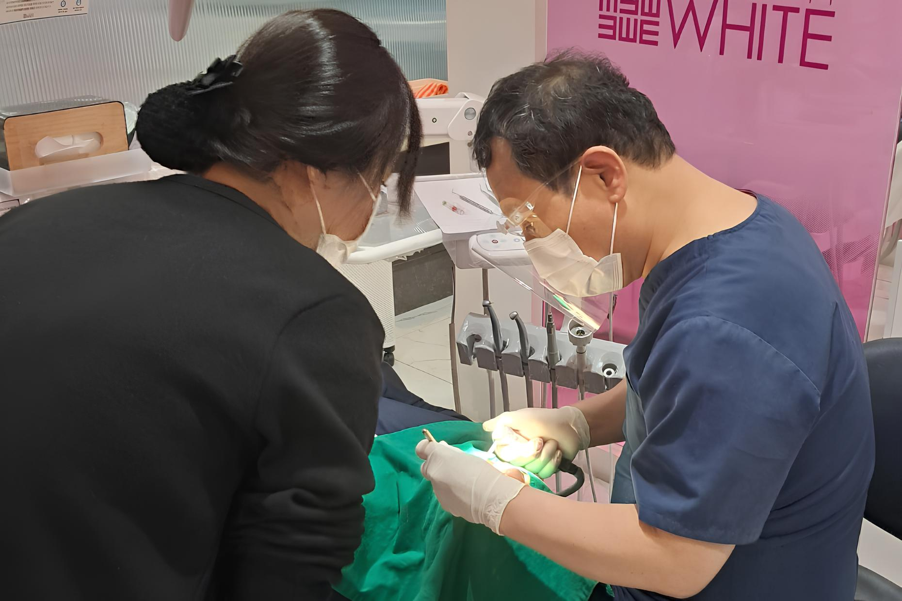
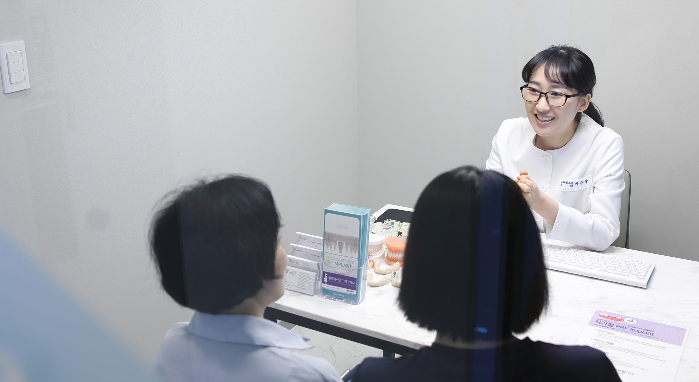
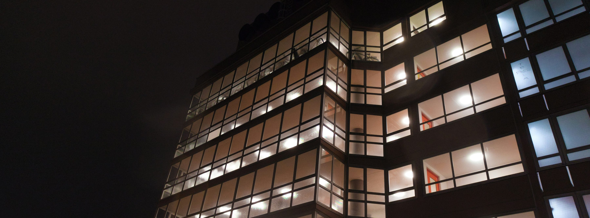

since 2003 · 20년의 진료창원점 · 마산점
내 치아에 맞는 전문의가
처음부터 끝까지 책임집니다
교정·치주·보철·구강악안면외과까지,
분야별 전문의가 한 분 한 분 직접 진료합니다.

since 2003 · 20년의 진료창원점 · 마산점
교정·치주·보철·구강악안면외과까지,
분야별 전문의가 한 분 한 분 직접 진료합니다.



화이트e치과는 다양한 진료 경험을 바탕으로
개개인에게 맞는 최적의 치료를 제공합니다.
교정과 · 치주과 · 보철과 · 보존과 · 구강악안면외과 · 통합치의학과 전문의가 지점별로 함께합니다.